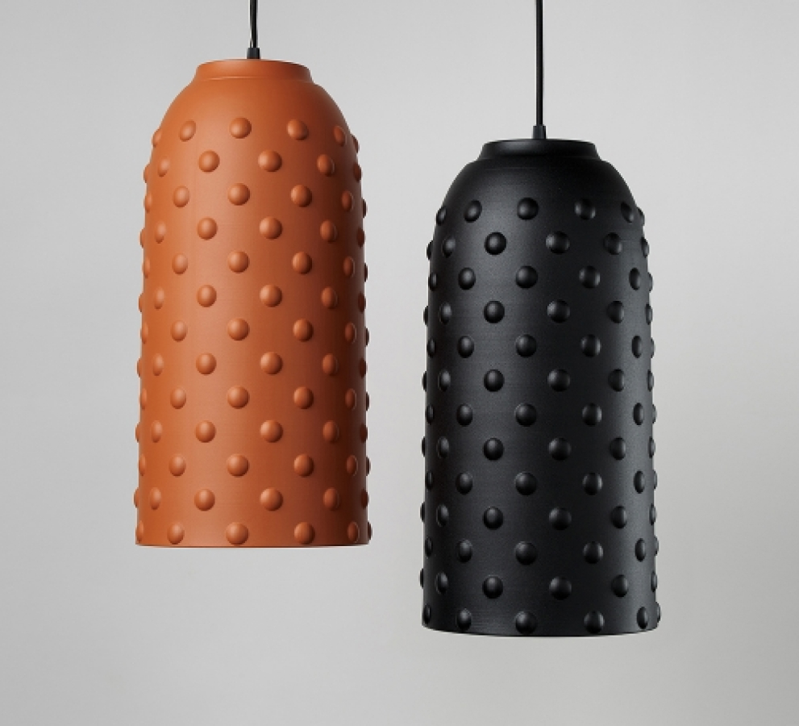

<section class="object">
  <div class="wrapper">
    <div class="object__inner">
      <ul class="breadcrumbs">
        <li class="breadcrumbs__item">Main</li>
        <li class="breadcrumbs__item">/</li>
        <li class="breadcrumbs__item">About</li>
      </ul>
      <div class="object__presentation">
        <div class="object__wrap">
          <div class="object__info">
            <h1 class="object__headline">WATER MAP</h1>
            <span class="object__year">2023</span>
            <span class="object__subtitle">Maiimo</span>
          </div>
          <div class="object__two-img object__two-pc">
            <div class="object__img-sizes">
              
            </div>
            <div class="object__img-sizes">
              
            </div>
          </div>
        </div>
        <div class="object__presentation-info">
          <div class="object__presentation-wrapper">
            <div class="object__presentation-big">
              
            </div>
            <div class="object__two-img object__two-mob">
              <div class="object__two-sizes">
                
              </div>
              <div class="object__two-sizes">
                
              </div>
            </div>
          </div>

          <p class="object__presentation-text">
            TRAPEZA is about the tradition expressed through rethinking of geometric shapes as a way to give a table as
            a piece of
            furniture its distinct expressiveness and maximum consonance with its main purpose - to gather together
            around itself
          </p>
        </div>
      </div>
      <ul class="object__list">
        <li class="object__item object__first">
          <div class="object__img object__first-big">
            
          </div>
          <p class="object__text object__first-text">
            TRAPEZA collection is a tribute to the tradition of shared meal, which brings family and friends together
            for an
            atmospheric dinner, a warm lunch, a friendly game or a festive celebration.
          </p>
          <div class="object__img object__first-small">
            
          </div>
        </li>
        <li class="object__item object__second">
          <div class="object__img object__second-small">
            
          </div>
          <div class="object__img object__second-big">
            
          </div>
        </li>
        <li class="object__item object__third">
          <p class="object__text object__third-text">
            Each table of the collection has a complex geometric leg, which is based on the shape of an isosceles
            trapezoid. The
            monolithic leg of a dining table consists of 5, and in coffee tables of 3 separate trapezoids connected in a
            circle. It
            is due to this connection that a beautiful fracture of the form and transitions throughout the base are
            created.
            Form, aesthetics and function find their maximum expression in this table - a wide, stable base and a flat
            table top
            with no sharp corners, perfectly combined, complement the harmonious silhouette of a modern space.
          </p>
          <div class="object__img object__third-big">
            
          </div>
        </li>
        <li class="object__item object__fourth">
          <div class="object__img object__fourth-big">
            
          </div>
          <div class="object__img object__fourth-small">
            
          </div>
        </li>
        <li class="object__item object__fifth">
          <div class="object__item-wrap object__fifth-wrap">
            <p class="object__text object__fifth-text">
              Each table of the collection has a complex geometric leg, which is based on the shape of an isosceles
              trapezoid. The
              monolithic leg of a dining table consists of 5, and in coffee tables of 3 separate trapezoids connected in
              a circle. It
              is due to this connection that a beautiful fracture of the form and transitions throughout the base are
              created.
              Form, aesthetics and function find their maximum expression in this table - a wide, stable base and a flat
              table top
              with no sharp corners, perfectly combined, complement the harmonious silhouette of a modern space.
            </p>
            <div class="object__img object__fifth-small">
              
            </div>
          </div>
          <div class="object__img object__fifth-big">
            
          </div>
        </li>
        <li class="object__item object__sixth">
          <div class="object__img object__sixth-small">
            
          </div>

          <div class="object__img object__sixth-big">
            
          </div>
        </li>
        <li class="object__item object__seventh">
          <div class="object__img object__seventh-big">
            
          </div>
          <p class="object__text object__seventh-text">
            The dining table is presented in two versions - round, in different diameters, and oval for a  big family
            gathering. For
            a spacious seating area in the living room, you can choose a large coffee table. And the peculiarity of the
            high side
            table is that it can easily be used as a bedside table, as it has the required height and a small tabletop.
            The main colors of the collection are natural oak and walnut, which add warmth and balance to the
            Collection’s
            expressive aesthetics that catches the eye.
          </p>
          <div class="object__img object__seventh-small">
            
          </div>
        </li>
      </ul>
    </div>
  </div>
</section>